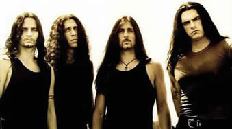
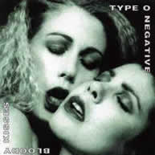
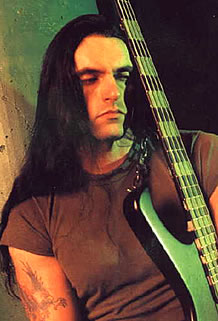

Desde o final da década de 80 e início
da década de 90, a banda nova-iorquina Type O Negative
vem escrevendo sua história na cena do Metal mundial. Porém,
sua origem e formação podem ser resgatadas nos anos
anteriores, com a banda chamada Carnivore.
Formada em 1983 por Peter Steele, no Brooklin
em Nova Iorque, a banda Carnivore teve apenas cinco anos de carreira
e dois trabalhos lançados neste período. O primeiro
lançado em 1985 com o mesmo nome da banda e o segundo,
intitulado Retaliation, em 1987. Apesar da breve trajetória,
o Carnivore foi uma espécie de "preparação"
para a formação musical e da própria personalidade
do Type O Negative. Por exemplo, nesses dois álbuns, percebe-se
uma sonoridade que seria lapidada nos anos posteriores e um visual
"pré-apocaliptico", que seria uma das marcas
do TON.
Após
o fim do Carnivore, Peter Stelle não desiste e sai
à procura de outros músicos. Josh Silver,
amigo pessoal de Peter e que já tinha produzido o
primeiro disco do Carnivore, foi o primeiro a ser convidado.
No ano de 1990, a banda já com o nome atual e a formação
com Peter Steele (líder, fundador compositor), Sal
Abruscato (baterista), Kenny Hickey (guitarrista) e Josh
Silver (tecladista), prepara o álbum de estréia.
No ano seguinte, além da qualidade, a proposta musical
foi significante para que a banda fosse contratada pela
gravadora Roadrunner.
Slow, Deep and Hard é um ótimo
início. O trabalho traz características da extinta
Carnivore, com passagens viscerais, algumas soando até
de forma crua; outras bem lentas e próximas do Doom Metal.
A faixa de abertura intitulada Unsuccessfully Coping with
the Natural Beauty of Infidelity, estende-se por doze minutos
e é uma referência das outras seis músicas
que compõem o álbum.
Outras características interessantes são
as passagens acústicas e até mesmo o uso de corais
no estilo "música sacra" (feitos pelo próprio
Peter). Percebe-se também que uma das curiosidades desse
disco é o nome das músicas. Por exemplo, a faixa
Gravitational Constant: G = 6.67 x 10-8 cm-3 gm-1 sec-2.
De qualquer forma, o trabalho foi bem recebido pela crítica
e pelo público. Em seguida, parte para uma turnê
ao lado de Biohazard e The Exploited.
Mais um elemento, no mínimo curioso, pode
ser encontrado na trajetória do Type O Negative. Geralmente,
uma banda lança um disco ao vivo após alguns anos
de carreira, vários álbuns lançados e uma
posição consistente em seu segmento. No caso do
Type O Negative não foi bem assim. O segundo álbum
de sua discografia, The origin of the feces lançado
em 1992 já é um trabalho ao vivo; ou pelo menos
deveria ser.
Os boatos dão conta de que a gravadora
Roadrunner havia entregado diretamente a Peter, uma quantia que
seria suficiente para a produção de um disco ao
vivo. Porém, Peter teria gastado todo o dinheiro promovendo
festas e orgias. Assim, vendo-se na obrigação de
entregar um disco "live" para a Roadrunner, a banda
regravou algumas faixas em estúdio e, durante a mixagem,
inseriu aplausos artificiais e até diálogos para
que a sonoridade soasse como nos discos ao vivo.
O fato é que The origin of the feces
não é um álbum ao vivo. Mas, entre as dez
faixas que compõem este trabalho, sendo algumas do disco
anterior, os destaques ficam com Hey Peter (versão
de Hey Joe de Jimi Hendrix) e Paranoid,
originalmente gravada pelo Black Sabbath. Ainda, outro
ponto interessante é a capa deste disco, mostrando um coito
anal homossexual.
O
ano de 1993 foi determinante para que a banda conquistasse seu
espaço junto ao público. Foi através do álbum
Bloody Kisses que a sonoridade agressiva e visceral de
outrora cedeu espaço às melodias mais sofisticadas
próximas ao Doom Metal e ganhou ares sombrios; porém,
sem soar comercial. Foi este trabalho que consagrou os primeiros
sucessos. O forte apelo visual, foi essencial para que os clipes
tivessem uma ótima aceitação do público,
chegando a liderar as paradas de clipes da MTV.
Além da qualidade musical, Bloody Kisses
tornou-se conhecido também pela polêmica gerada em
torno de algumas músicas. A introdução, Machine
Screw, inicia-se com gemidos eróticos femininos. Na
seqüência, a segunda faixa, Christian Woman,
narra em sua letra, a história de uma adolescente que vê
Cristo como um símbolo sexual. O clipe desta música
exibe cenas da adolescente na cama com o suposto Cristo. Além
disso, Christian Woman estendia-se por aproximadamente
nove minutos. Assim, não apenas a duração
teve de ser reduzida como a letra teve de ser adaptada para ser
executada nas rádios.
A terceira faixa, Black nº 1, também
ganhou uma versão videoclipe. O hardcore ressurge em faixas
como Fay wray come out and play e Kill all
the white people. Peter Steele despeja desilusões
amorosas e problemas pessoais em faixas como Summer Breeze,
Bloody Kisses, Too Late: Frozen e Blood
& Fire.
Em 1994, este álbum foi relançado
numa versão "digipack" com capa e encarte diferentes
e sem as faixas mais curtas; porém, trazia a inédita
Suspended in Dusk. Neste mesmo ano, o The origin of the
feces foi relançado com uma nova capa. Durante uma turnê
de divulgação do Bloody Kisses, o baterista Sal
Abrusvatto desentendeu-se com os outros membros e abandonou a
banda. Johnny Kelly, ex Life of Agony, foi convidado
para ocupar a vaga deixada por Sal.
No ano seguinte, o Type O Negative foi convidado
a participar do tributo ao Black Sabbath, intitulado Nativity
in Black, ao lado de bandas como Megadeth, Bruce
Dickinson, Sepultura, Faith No More, White
Zombie, entre outros. Neste trabalho, o Type regrava a música
Black Sabbath, com um arranjo mais sombrio, diferente
do original; enquanto as outras bandas fizeram releituras semelhantes
às gravações originais. Nesta mesma época,
Peter Steele posa nu para a revista Playgirl e aumenta a popularidade
do Type O Negative.
O álbum October Rust foi lançado
em 1996 e é considerado por muitos fãs, como o melhor
trabalho da carreira. Ao longo de suas quinze músicas,
October Rust oscila entre climas românticos, como Love
you to Death (com introdução em piano) que
ganhou uma versão videoclipe; climas amenos como encontrado
em Green Man; ou mais densos como Red Water.
Ainda, há uma passagem eletrônica e mais dançante
em My Girlfriend's Girlfriend, que também se tornou
um videoclipe, mas proibido em alguns países devido ao
fato de abordar o homossexualismo feminino. Mas este trabalho
não deixa de lado a face sombria da banda como em Wolf
Moon, nem a introspecção de Peter em Haunted.
Como de costume, mais uma faixa é batizada com um nome
imenso: The Glorious Liberation Of The People's Technocratic
Republic Of Vinnland By The Combined Forces...
Nos anos seguintes, o Type O Negative participa
de importantes festivais como o Ozz Fest e das trilhas sonoras
dos filmes A Bruxa de Blair, A Noiva de Chucky
e, posteriormente, Mortal Kombat.
World Coming Down é o quinto
álbum. Este trabalho foi concebido durante turnês
anteriores. Porém, tragédias pessoais, como a morte
do pai de Peter, colaboraram para o clima mais pesado do álbum.
Lançado em 1999, este disco é citado como um dos
menos prósperos do Type O Negative, com letras mais depressivas
e uma sonoridade um pouco mais comercial. Mas, entre suas 13 faixas,
ainda destacam-se Every One I Love Is Dead, All Hallow´s
Eve e Everything Dies; além de uma regravação
dos Beatles: Day Tripper.
Em
2000 foi lançado um pacote promocional contendo uma compilação
de versões dos maiores sucessos da carreira e algumas inéditas,
além do DVD After Dark e um livreto de oito páginas,
intitulado The Least Worts Of. Nesta mesma época,
Johnny Kelly e Kenny Hickey passaram a atuar também em
projetos paralelos. Em 2001, a banda se reúne para dar
início às composições do próximo
álbum.
Após três anos de expectativa para
os fãs, o Type lança o inédito Life Is
Killing Me. O trabalho mais recente, traz quinze faixas que
mantêm as principais características da banda. Porém,
alguns detalhes foram incorporados neste disco. Por exemplo, a
banda fez uso, na faixa Less than Zero, de uma cítara,
instrumento "pouco convencional" entre bandas do gênero.
Os vocais de Peter continuam graves e profundos, enquanto Josh
eleva a sofisticação com os arranjos de teclado.
Life Is Killing Me agrada aos fãs mais antigos e exigentes
e torna-se mais uma referência na discografia do TON.
Em maio de 2005, no site oficial da banda, foi
divulgada uma informação de que Peter Steele estaria
morto. Na mesma página, encontrava-se uma foto da lápide
do vocalista. Obviamente, a notícia foi desmentida imediatamente.
Porém, não se sabe ainda se isto foi uma brincadeira
dos próprios membros ou se a webpage foi invadida por hackers.
Neste mesmo ano, Peter Stelle participa das gravações
do filme Tao of M, de James L. Bills, interpretando o
vampiro Viktor Baine.
No início de 2006, é lançado
pela gravadora alemã SPV, o DVD Symphony for the Devil
(The World of Type O Negative). Juntamente com o DVD, é
lançado um single contendo três covers do guitarrista
Carlos Santana: Evil Ways, Oye Como Va e Black
Magic Woman. Entretanto, o ano de 2006 não foi muito
próspero para o TON. Peter Steele sofreu de psicose induzida
por cocaína, foi preso e ainda teve de passar por sessões
de psquiatria. Em novembro, foi anunciado o novo trabalho da banda:
Dead Again; mas com previsão de lançamento
apenas no início do ano seguinte.
Em janeiro de 2007, também foram divulgadas
a capa e os nomes das faixas do novo álbum. Em março,
Steele justificou o atraso do lançamento de Dead Again
por problemas particulares (incluindo sua passagem pela prisão
por "acidentalmente socar alguém na cara por cinquenta
vezes" segundo palavras do próprio músico).
Finalmente, em meados de 2007, é lançado
Dead Again com dez faixas que acrescentam uma influência
Punk e Hard à tradicional sonoridade da banda. O trabalho
não traz grandes inovações musicais mas segue
a linha já característica do Type O Negative: com
letras reflexivas e os vocais graves de Steele. Paralelamente,
é lançado o videoclipe da faixa The Profit Of
Doom.
Apesar de haver uma certa unidade na sonoridade
dos discos, enquadrar o Type O Negative em apenas um estilo dentro
do Metal é tarefa que poucos fãs e críticos
se arriscam. Porém, a influência de Black Sabbath,
por exemplo, é nítida; mas nem por isso são
classificados apenas como Doom Metal. Além das músicas,
o visual "vampírico" já os rotulou como
"Vampiric Metal" e, em outros casos, como Gothic Metal.
Mas Peter Stelle declara que o estilo é "Gothadelic".
De qualquer forma, acima dos rótulos está
uma história de pelo menos 15 anos que colocaram o Type
O Negative entre as mais respeitadas bandas do segmento. Assim,
os fãs sabem que a qualquer momento pode surgir mais uma
novidade de Peter Steele, Kenny Hickey, Jhonny Kelly e Josh Silver.
Por
Spectrum
Downloads
Disponíveis: